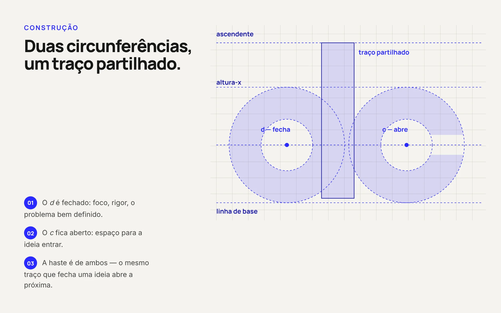
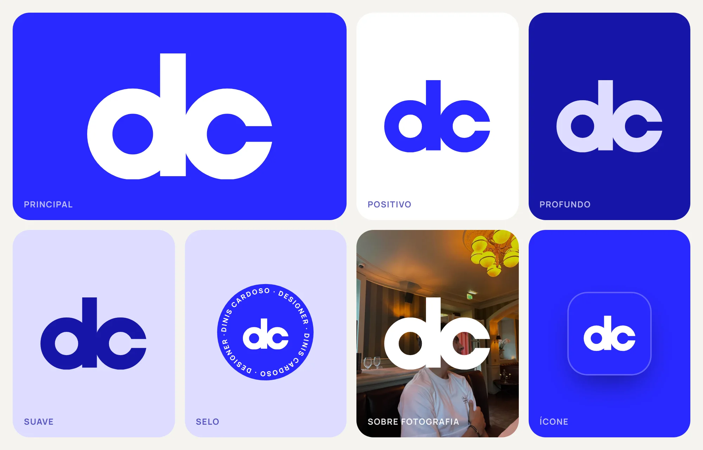
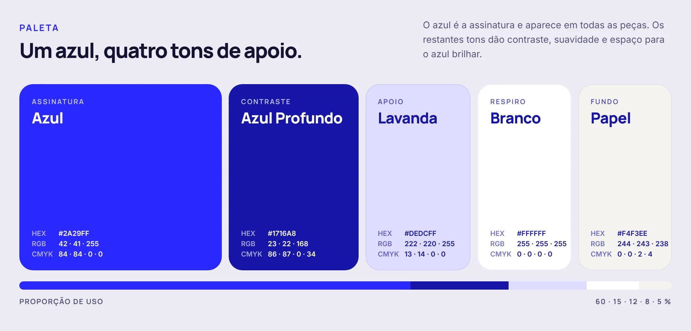

01
Problema
O d fechado representa o desafio: concreto, delimitado, a compreender antes de agir.
Marca pessoal

Como designer, precisava de uma assinatura que me identificasse em tudo o que faço — do portfólio ao CV, das redes sociais a um simples cartão de visita. O desafio era resumir num único símbolo quem sou e como trabalho: alguém que encara cada problema como o ponto de partida para uma solução. O resultado é o monograma dc, construído com apenas duas formas geométricas e uma cor — fácil de reconhecer e simples de aplicar em qualquer suporte.


“não existem problemas, existem soluções.”
O d fechado representa o desafio: concreto, delimitado, a compreender antes de agir.
A haste partilhada liga as duas letras: é o raciocínio que transforma um no outro.
O c aberto deixa espaço para a ideia entrar e para o projeto crescer.
O logótipo junta as iniciais de Dinis Cardoso num só traço. O d é fechado e representa o problema: algo concreto e bem definido, que tem de ser compreendido primeiro. O c é aberto e representa a solução: o espaço por onde entra a ideia. A haste vertical é partilhada pelas duas letras e liga-as — tal como no meu processo, perceber bem o problema é o que abre caminho à resposta. As duas letras nascem de circunferências com o mesmo diâmetro e a mesma espessura, para que o monograma seja equilibrado, legível em tamanhos pequenos e forte como ícone.




A partir do símbolo criei um sistema visual completo e coerente: uma paleta assente no azul, com variações profundas e suaves que dão contraste sem perder identidade; duas tipografias — a Manrope, clara e moderna, para comunicar, e a Caveat, manuscrita, para dar voz ao meu lema; e versões do logótipo para fundos claros, fundos escuros e fotografia, além de um selo e de um ícone. Aplicada em cartões de visita, papel timbrado, cartazes, merchandising e redes sociais, a marca mantém-se reconhecível em qualquer contexto e reflete aquilo que defendo como designer: ideias claras, bem construídas e com propósito.


Identidade visual e aplicação de treino em casa e no ginásio.
2026
Criação de um branding completo.
2024

Criação de um rebranding completo.
2025
Reorganização e redesign da área de escritório.
2022
Sistema de interfaces dentro do jogo para um servidor FiveM.
2025
Site e loja online do servidor NEXT PVP.
2025Tens um projeto em mente? Vamos conversar — estou disponível para trabalhar em Lisboa e em qualquer parte do mundo.